Gallery¶
In this page we demonstrate the output of various oversampling and noise removal techniques, using default parameters.
For binary oversampling and noise removal, the figures can be reproduced by the ballpark_sample function using a built-in or user definied dataset:
-
smote_variants.ballpark_sample(sampler_nf, img_file_base=None, img_file_sampled=None, use_built_in=1, data_maj_user=None, data_min_user=None, center_min=array([[ 4. , 0. ], [ 3. , 0.5], [ 3. , -1. ]]), var_min=array([[[1. , 0. ], [0. , 1. ]], [[0.5, 0. ], [0. , 0.5]], [[1. , 0. ], [0. , 0.5]]]), num_min=array([4, 8, 8]), center_maj=array([[0., 0.]]), var_maj=array([[[1., 0.], [0., 1.]]]), num_maj=array([60]))[source]¶ Execute ballpark example sampling or noise removal with plotting
Parameters: - sampler_nf (SamplerBase/NoiseFilter) – sampling or noise filtering object
- img_file_base (str) – filename to save the plot of the base data
- img_file_sampled (str) – filename to save the plot of the sampled data
- use_built_in (int) – id of the built in data to be used - 0/1, data will be generated if no user proveded data is specified
- data_maj_user (np.matrix) – user provided majority data
- data_min_user (np.matrix) – user provided minority data
- center_min (np.matrix) – centers of minority concepts with Gaussian distribution
- var_min (np.matrix) – variances of minority concepts
- num_min (np.array) – number of samples to generate from minority concepts
- center_maj (np.matrix) – center of majority concept
- var_maj (np.matrix) – variance of majority concept
- num_maj (int) – number of samples to generate from the majority concept
Example:
ballpark_sample(SMOTE_ENN(), img_file_base= 'base.png', img_file_sampled= 'SMOTE_ENN.png') ballpark_sample(EditedNearestNeighbors(), img_file_base= 'base.png', img_file_sampled= 'ENN.png')
For multiclass oversampling we have used the ‘wine’ dataset from sklearn.datasets, which has 3 classes and many features, out which the first two coordinates have been used for visualization.
Oversampling sample results¶
In the captions of the images some abbreviations referring to the operating principles are placed. Namely:
- NR: noise removal is involved
- DR: dimension reduction is applied
- Clas: some supervised classifier is used
- SCmp: sampling is carried out componentwise (attributewise)
- SCpy: sampling is carried out by copying instances
- SO: ordinary sampling (just like in SMOTE)
- M: memetic optimization is used
- DE: density estimation is used
- DB: density based - the sampling is based on a density of importance assigned to the instances
- Ex: the sampling is extensive - samples are added successively, not optimizing the holistic distribution of a given number of samples
- CM: changes majority - even majority samples can change
- Clus: uses some clustering technique
- BL: identifies and samples the neighborhoods of borderline samples
- A: developed for a specific application

 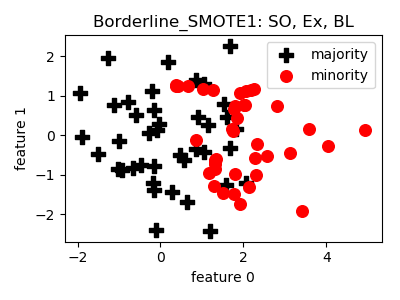
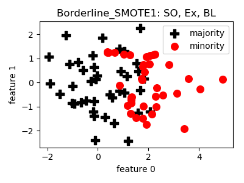
 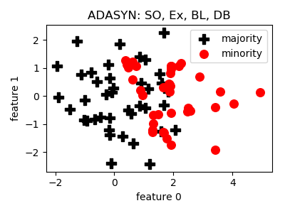
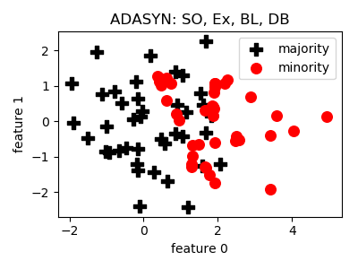
 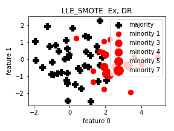
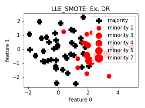

 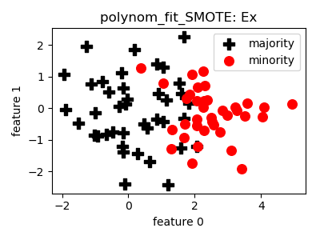
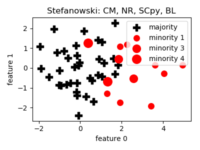
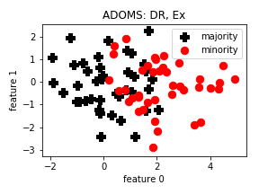
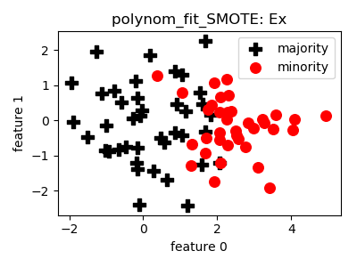
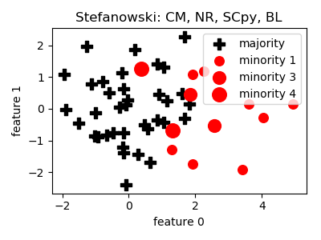
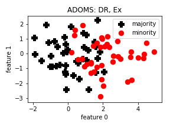


 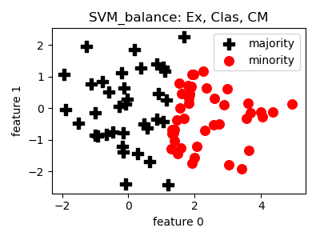
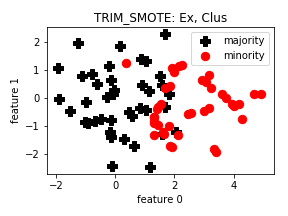
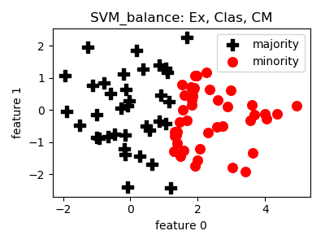
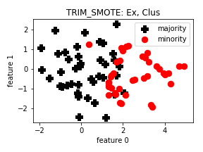
 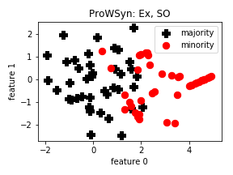
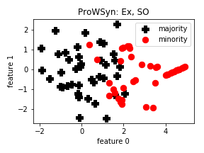
 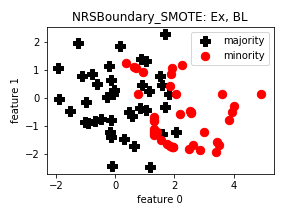
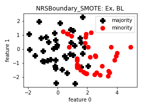
 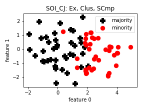
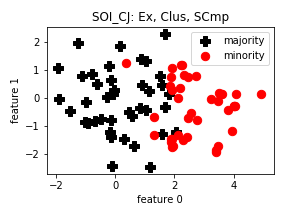

 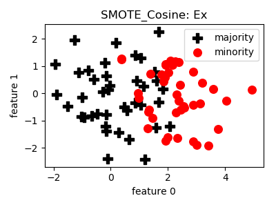
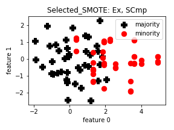
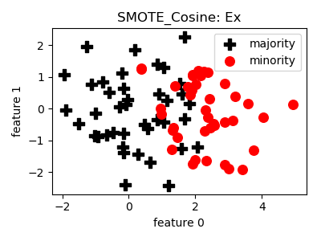
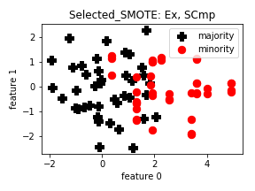
 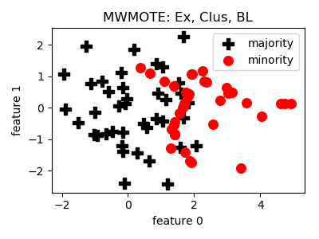
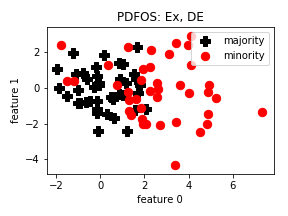
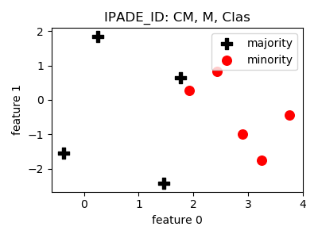
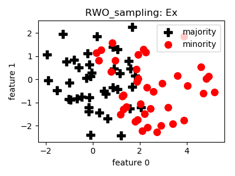
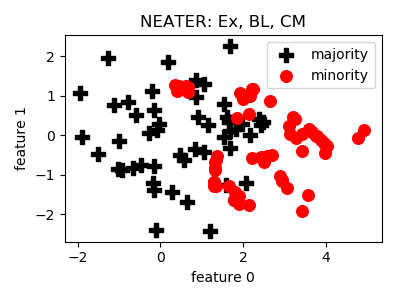
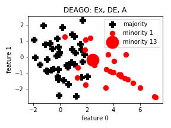
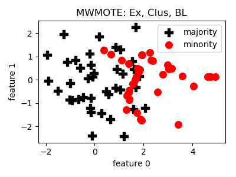
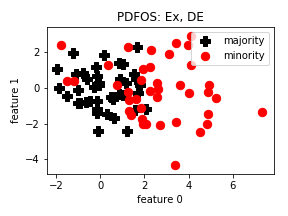
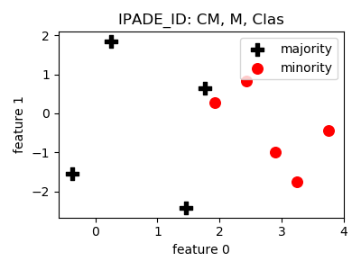
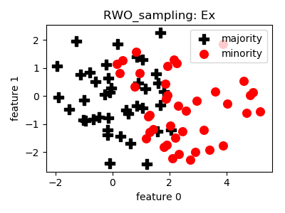
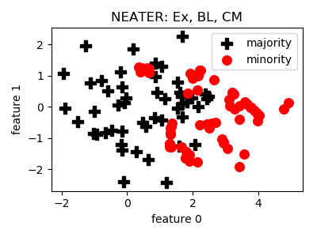
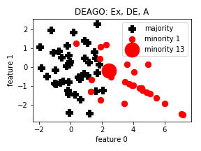
 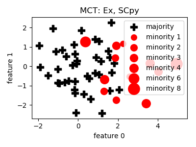
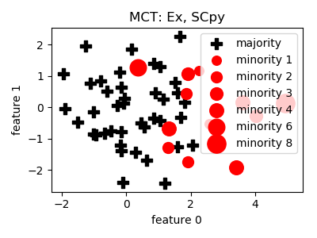

 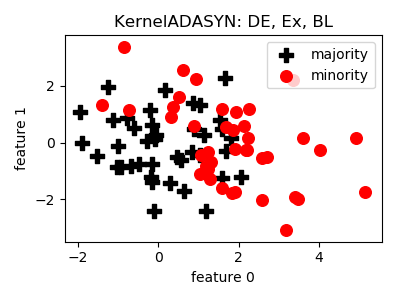
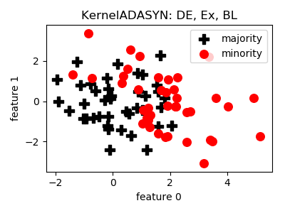
 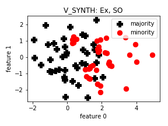
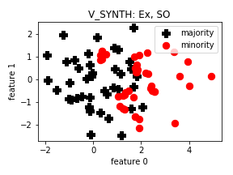


 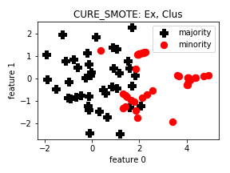
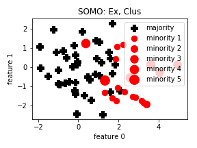
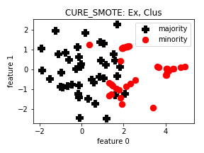
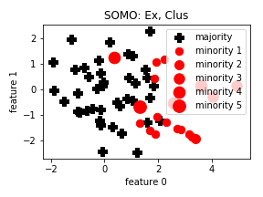
 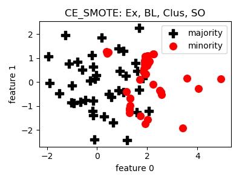
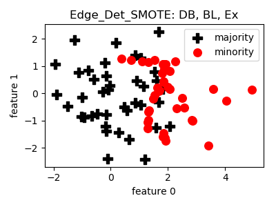
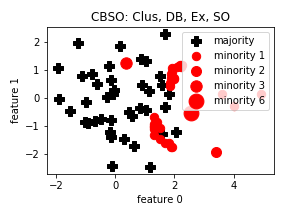
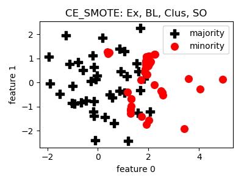
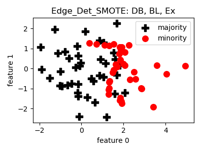
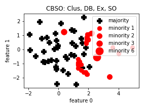
 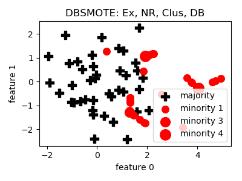
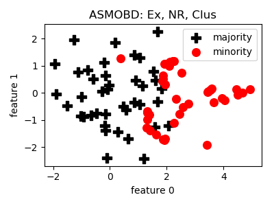
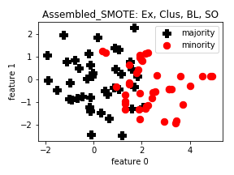
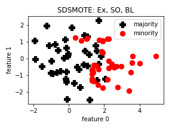
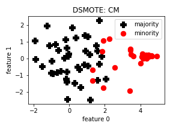
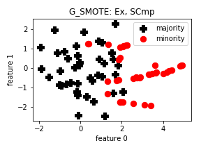
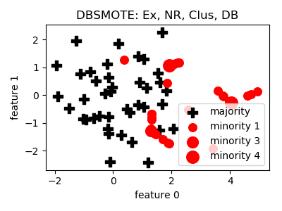
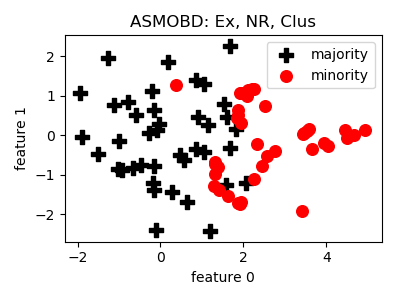
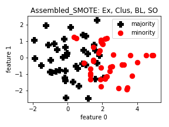
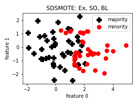
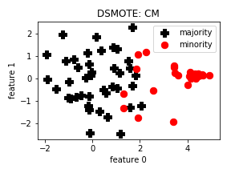
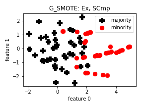
 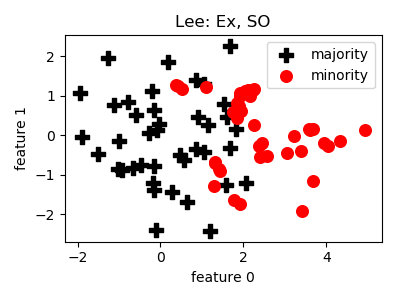
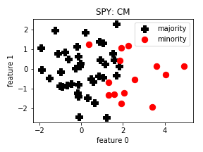
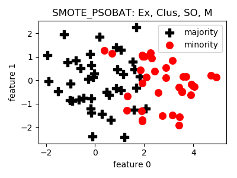
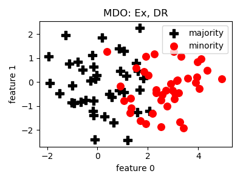
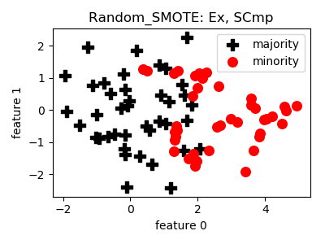
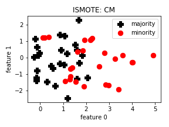
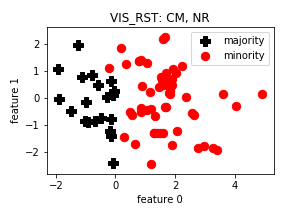
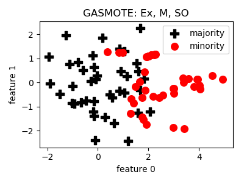
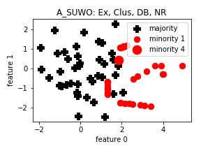
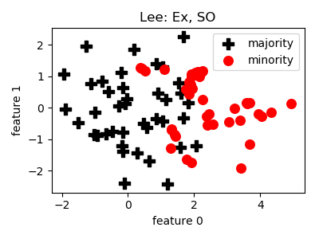
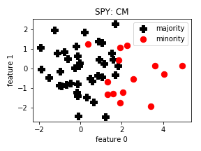
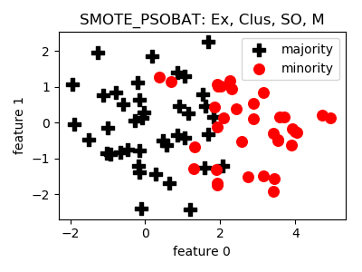
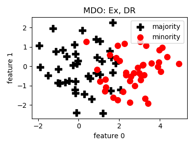
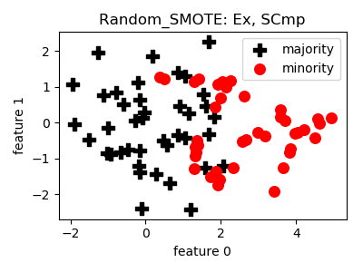
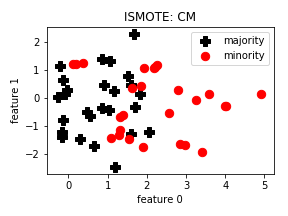
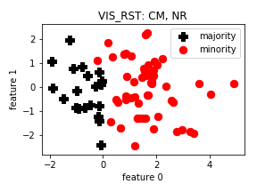
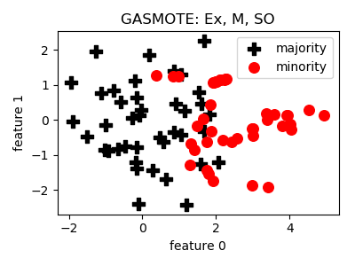
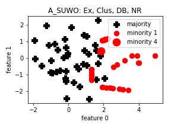

 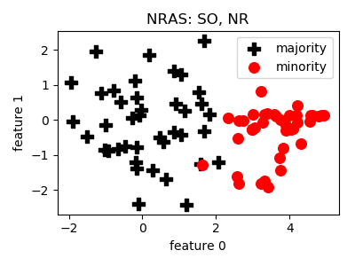
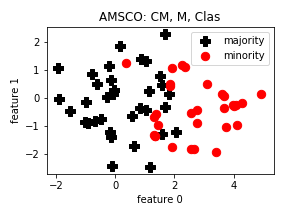
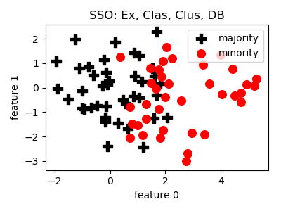
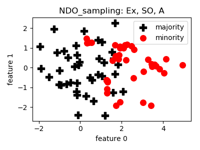
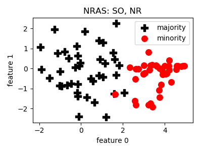
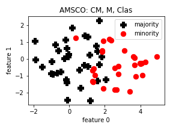
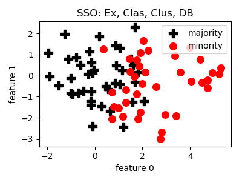
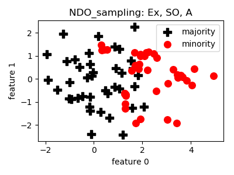
 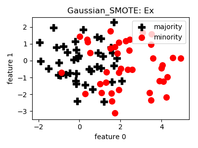
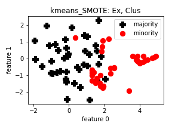
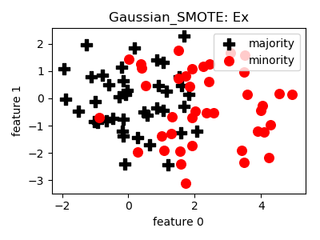
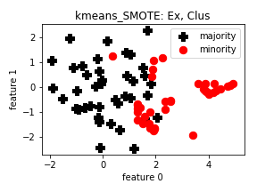